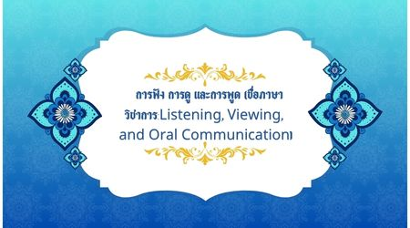

การฟัง การดู และการพูด (ชื่อภาษาวิชาการ:Listening, Viewing, and Oral Communication)
เป็นทักษะที่มีความสำคัญต่อการสื่อสารในชีวิตประจำวัน เพราะการรับข้อมูลจากผู้อื่นไม่ได้เกิดขึ้นจากการอ่านเพียงอย่างเดียว แต่ยังเกิดจากการฟังและการดูสื่อประเภทต่าง ๆ ผู้เรียนควรฝึกฟังและดูอย่างตั้งใจ สามารถจับใจความสำคัญ วิเคราะห์เนื้อหา แยกข้อเท็จจริงออกจากความคิดเห็น และพิจารณาความน่าเชื่อถือของสารได้ ขณะเดียวกันควรฝึกพูดเพื่อเล่าเรื่อง อธิบาย แสดงความคิดเห็น หรือเสนอความคิดเห็นของตนเองอย่างมีเหตุผล โดยคำนึงถึงความเหมาะสมของถ้อยคำ น้ำเสียง และกิริยาท่าทาง การฟัง การดู และการพูดที่ดีจึงช่วยให้เกิดการสื่อสารที่เข้าใจตรงกันและลดความเข้าใจผิด หลักสูตรภาษาไทยให้ความสำคัญกับการเลือกฟังและดูอย่างมีวิจารณญาณ รวมถึงการพูดแสดงความคิดเห็นและความรู้สึกอย่างมีวิจารณญาณและสร้างสรรค์